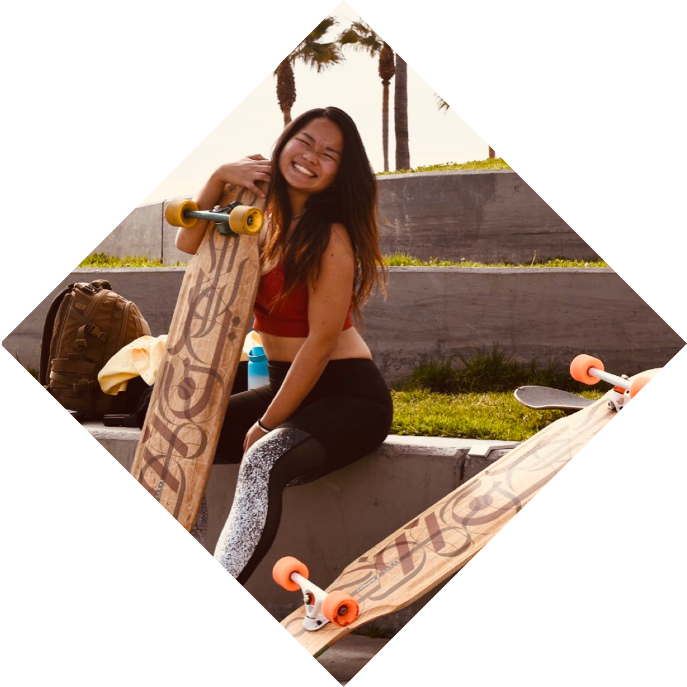
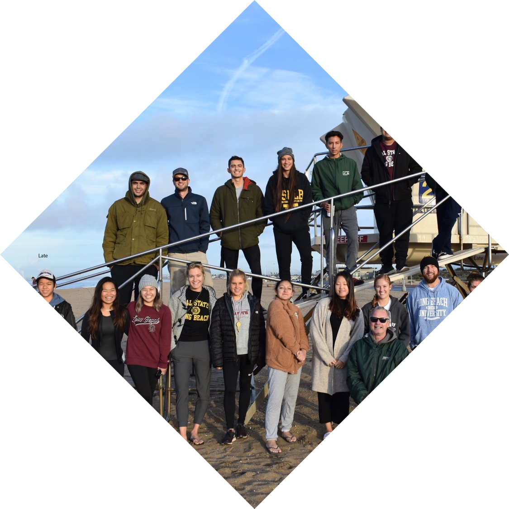
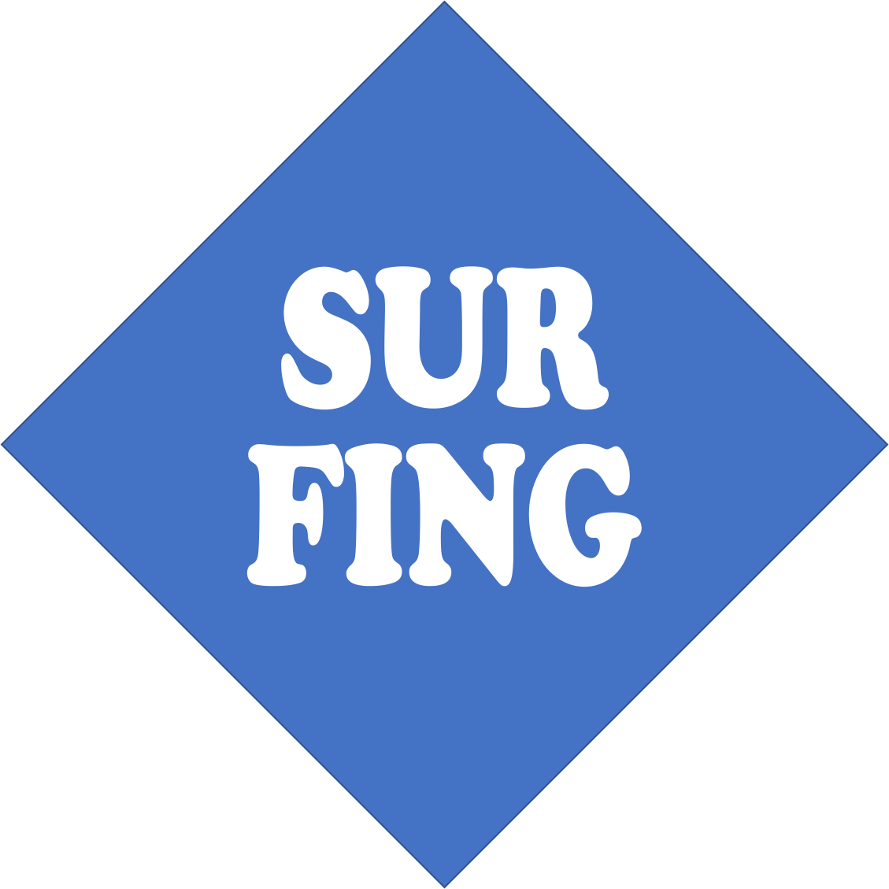
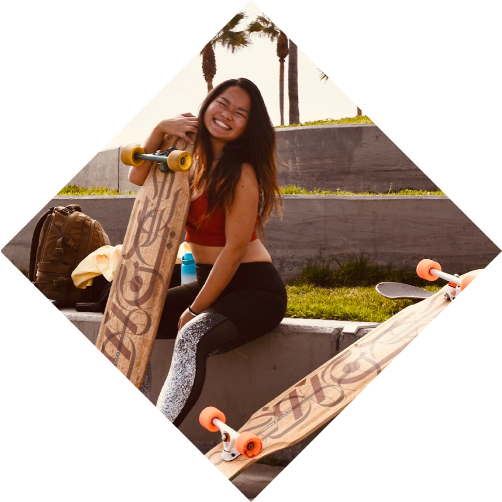
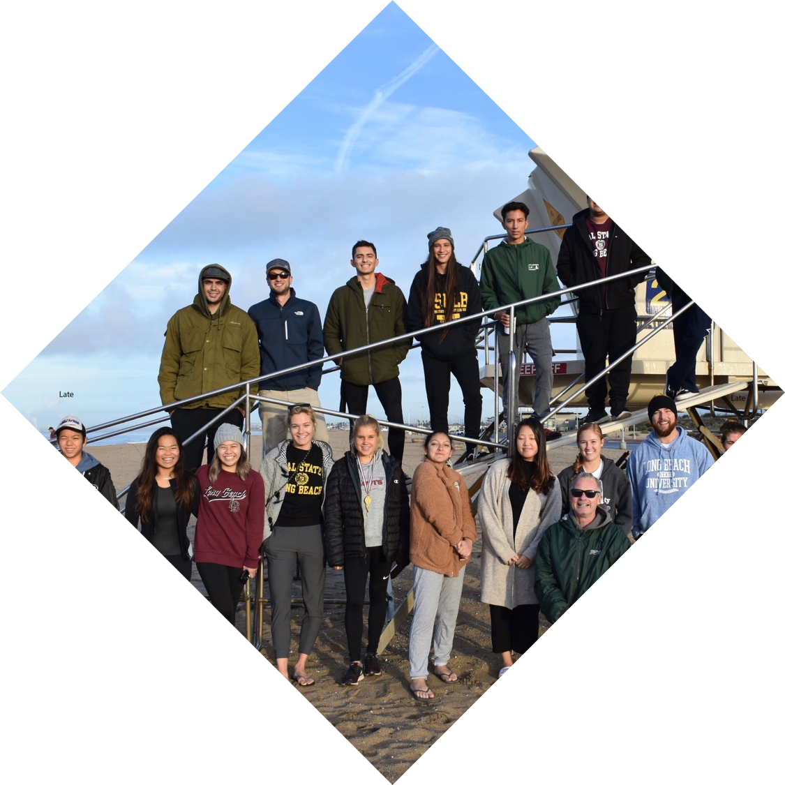
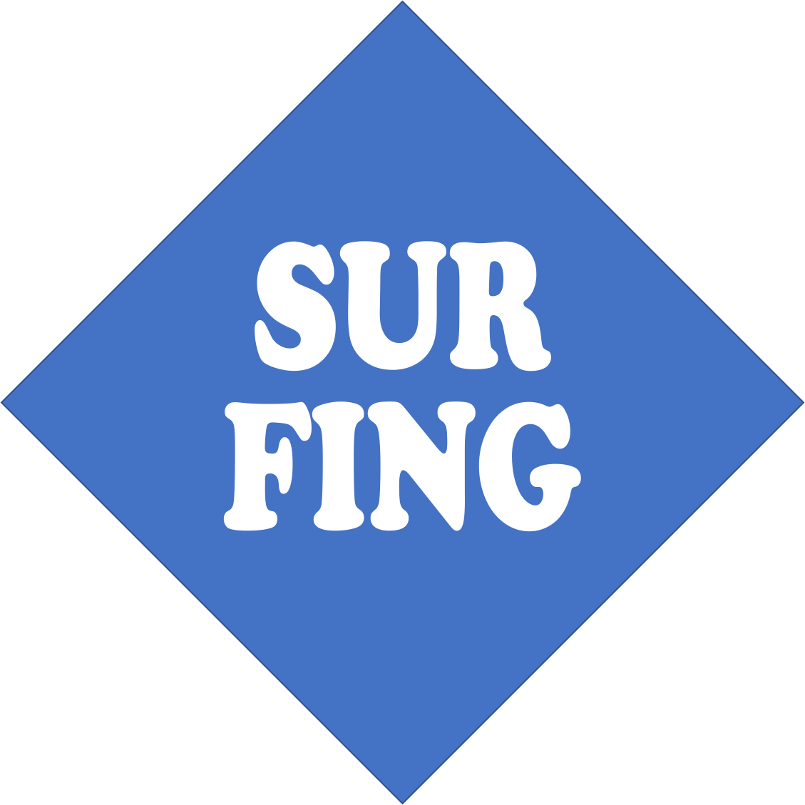
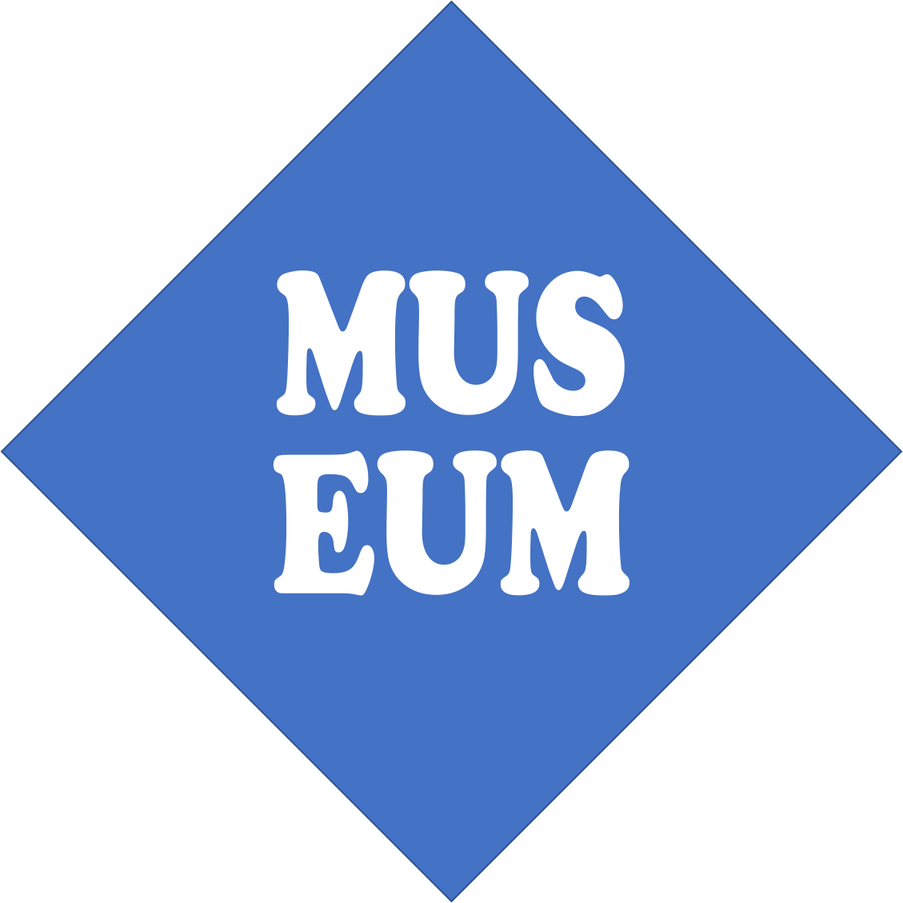
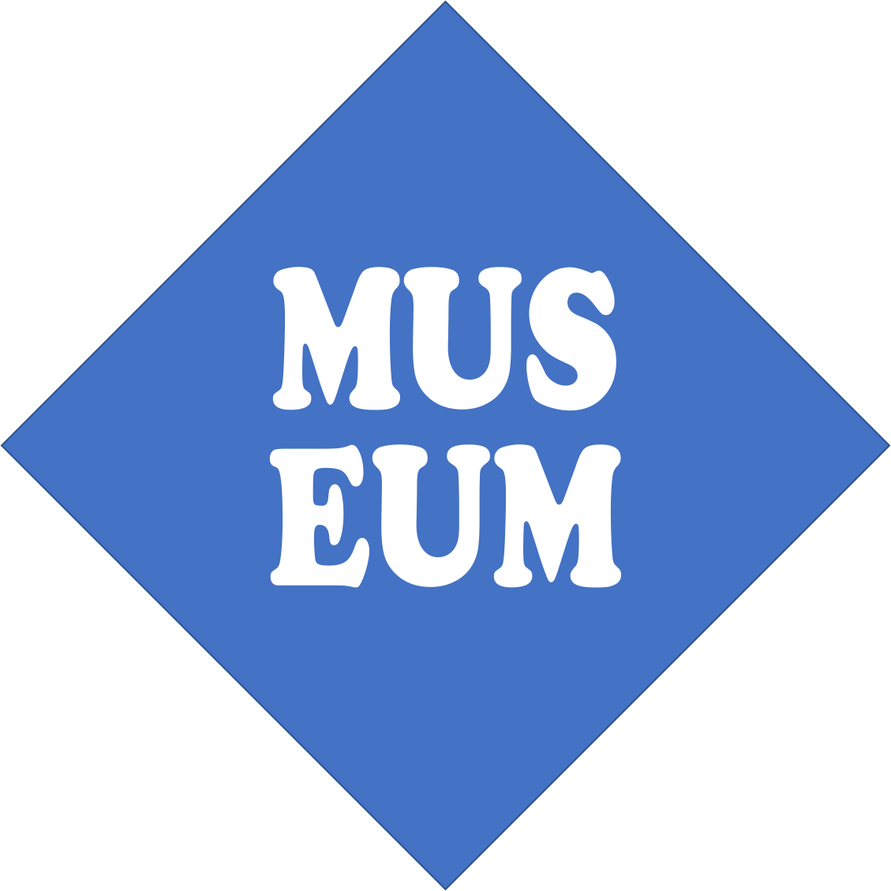
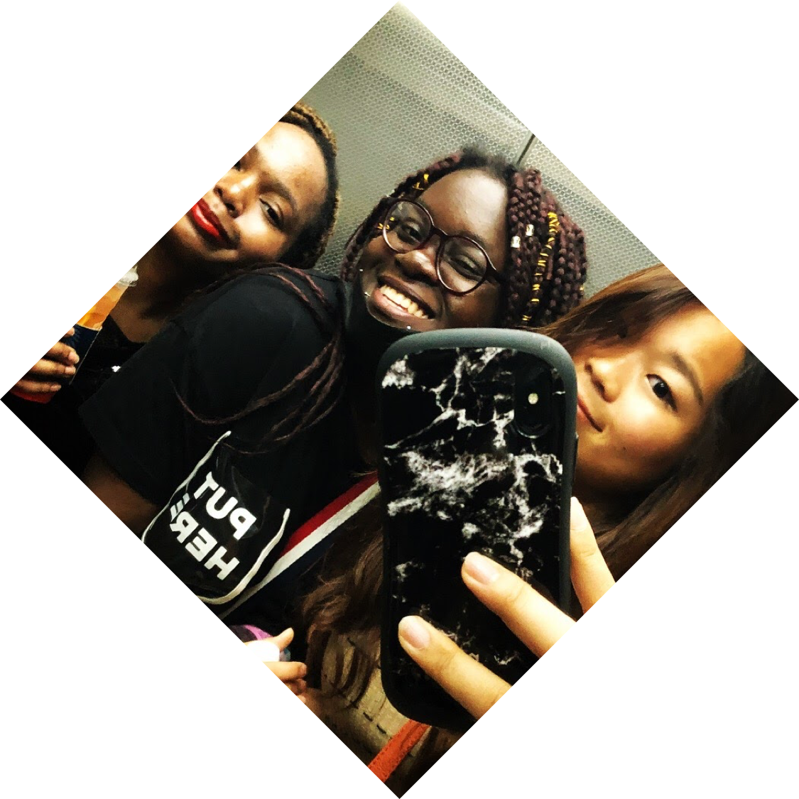
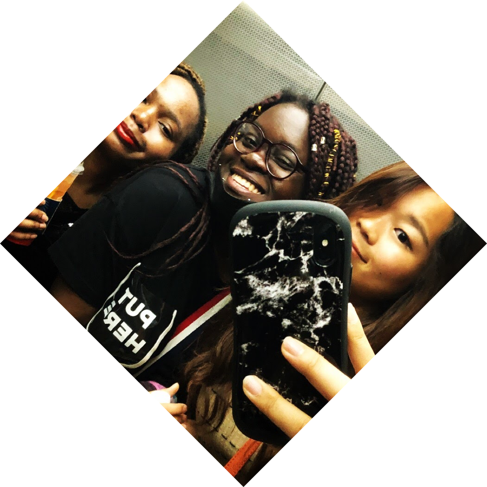

MY STORY
立命館大学国際関係学部の尾宮明莉(おみやあかり)です。
2020年の春から１年間休学(申請)しており、21又は22年卒になります。
2度目の留学経験の間、シリコンバレーでの滞在でITの可能性魅了され、プログラミングを身に付ける決心をしました。
【人との出会い】と【学校の外での学び】そして多岐に渡る【趣味】から本当の学びができる考え、
自身の経験から生まれる価値間で社会に貢献すること、自分らしさを発揮することが人生の目標です。
2020年の春から１年間休学(申請)しており、21又は22年卒になります。
2度目の留学経験の間、シリコンバレーでの滞在でITの可能性魅了され、プログラミングを身に付ける決心をしました。
【人との出会い】と【学校の外での学び】そして多岐に渡る【趣味】から本当の学びができる考え、
自身の経験から生まれる価値間で社会に貢献すること、自分らしさを発揮することが人生の目標です。
Hey, it's Me.
CAREER
2014年4月 立命館宇治高校 IMコース 入学
2014年6月 カナダ・オタワの現地高校に１学年館の留学
2016年 Wakkaプロジェクトを立ち上げる
2017年4月 立命館大学 国際関係学部 Global Studies専攻 入学
2019年9月 アメリカ カリフォルニア州立大学ロングビーチ校 留学
2020年 未来電子テクノロジ株式会社にてインターンを経験
2021年3月 立命館大学 国際関係学部 Global Studies専攻 卒業見込み
2014年6月 カナダ・オタワの現地高校に１学年館の留学
2016年 Wakkaプロジェクトを立ち上げる
2017年4月 立命館大学 国際関係学部 Global Studies専攻 入学
2019年9月 アメリカ カリフォルニア州立大学ロングビーチ校 留学
2020年 未来電子テクノロジ株式会社にてインターンを経験
2021年3月 立命館大学 国際関係学部 Global Studies専攻 卒業見込み
What makes me ME?
HOBBY
 






 



 

So, what makes you YOU?
趣味を通して国境を超えて出会った数多くの人たちは、想像力と価値観を広げてくれました。
週末と長期休暇は机上での勉強と作業から離れて、趣味に費やす。
趣味があるからこそ私は私でいられると思います。